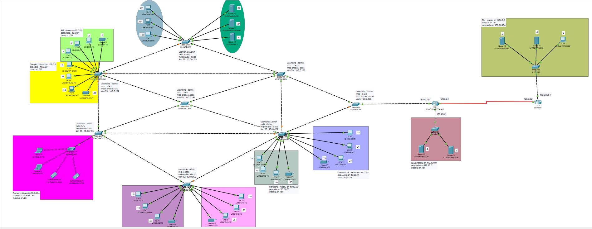
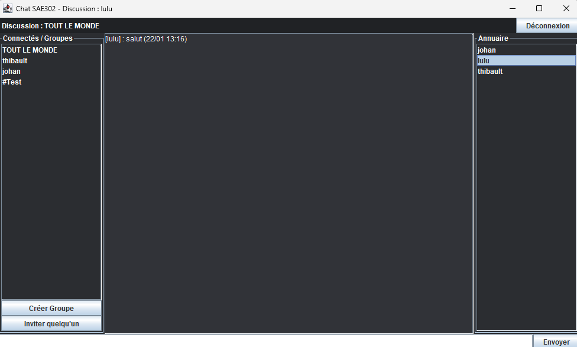

Étudiant en BUT Réseaux & Télécommunications, passionné par l'informatique sous toutes ses formes. En alternance chez MGS Informatique, j'apprends à administrer et sécuriser des infrastructures réseau au contact du terrain. Toujours curieux, j'aime aussi expérimenter de mon côté pour progresser au-delà des cours.
Qui suis-je
Étudiant en 2ème année de BUT Réseaux & Télécommunications à l'IUT de Blois, actuellement en alternance chez MGS Informatique. Je m'intéresse particulièrement aux systèmes et réseaux, ainsi qu'à l'administration système. La cybersécurité est également un domaine qui me passionne et que j'aime approfondir.
Curieux et autodidacte, j'approfondis mes connaissances en dehors des cours. Mon objectif : évoluer vers un poste d'ingénieur systèmes et réseaux , en développant mes compétences pour répondre aux besoins concrets des entreprises.
En dehors, je pratique le tennis depuis plus de 12 ans — une discipline qui m'a appris la rigueur, la persévérance et l'esprit de compétition.
Réalisations

SAE201 — 2024/2025
Conception et simulation complète d'un réseau d'entreprise avec son FAI. Architecture sécurisée intégrant VLANs dédiés par service, pare-feu, DMZ, services internes (DNS, DHCP, Web) et accès SSH administré.

SAE302 — 2024/2025
Application de messagerie instantanée Client/Serveur en Java. Architecture multi-threadée avec authentification BDD MariaDB, messagerie privée, groupes de discussion, annuaire des connectés et protocole réseau TCP maison.
Dans le cadre de la SAE201, j'ai conçu de A à Z un réseau informatique pour une entreprise fictive nommée LucasTech, entièrement simulé sous Cisco Packet Tracer.
Chaque service (RH, comptabilité, direction, marketing…) dispose de son propre VLAN pour garantir isolation et sécurité. L'adressage IP a été optimisé via le VLSM. L'architecture repose sur une topologie redondante avec plusieurs switchs 2960 et un routeur 2901 assurant le routage inter-VLAN ainsi que la connexion à un FAI simulé.
Isolation des services : VLANs dédiés avec ACLs inter-VLAN et déploiement d'une DMZ pour les services exposés à Internet.
Connexion FAI : Configuration d'un réseau FAI fictif, mise en place de NAT, PAT et routage statique.
Accès distant : SSH sécurisé sur un VLAN d'administration dédié.
Ce projet m'a permis de développer mes compétences en architecture réseau, en sécurité, en gestion des services réseau (DHCP, DNS, Web), et en administration à distance. Il m'a également offert une vision concrète de la conception d'un réseau professionnel, même à petite échelle.
Application de messagerie instantanée développée en Java dans le cadre de la SAE302, inspirée de Discord. Elle repose sur une architecture Client/Serveur avec communication en temps réel via Sockets TCP.
L'interface se décompose en trois colonnes : la liste des connectés et groupes à gauche, la zone de discussion au centre, et un annuaire des utilisateurs à droite. Fonctionnalités : broadcast global, messagerie privée, création de groupes, invitation d'utilisateurs et déconnexion propre.
Serveur (ServeurChat.java) : Écoute sur le port 12345. Un thread Handler indépendant est instancié par client. Une HashMap synchronisée associe chaque pseudonyme à son flux de sortie, permettant le routage des messages privés et le broadcast global.
Client IHM (Connexion.java + Fenetre.java) : La fenêtre de login gère l'authentification via Socket. La fenêtre principale lance un thread de réception en arrière-plan — toutes les modifications de l'UI transitent par SwingUtilities.invokeLater().
Base de données (Database.java) : Classe utilitaire encapsulant la connexion JDBC MariaDB. Chaque message est archivé avec horodatage automatique.
LOGIN:user:password → AuthentificationAUTH_OK / AUTH_FAILED → Réponse serveurTOUT LE MONDE:message → Broadcast globalAlice:message → Message privé vers AliceUPDATE_LIST:Alice,Bob,Lucas → Mise à jour annuaireThread-safety : La HashMap des clients est partagée entre tous les threads Handler. Chaque accès est protégé par synchronized pour éviter les race conditions lors des connexions/déconnexions simultanées.
Interface non bloquante : La réception des messages est déportée dans un thread secondaire. Les modifications de l'UI passent obligatoirement par SwingUtilities.invokeLater().
Sécurité SQL : Utilisation exclusive de PreparedStatement pour prévenir toute injection SQL lors de l'authentification et de l'archivage.
Expérience professionnelle
Préparation de bout en bout d'une nouvelle infrastructure pour un client : deux serveurs Dell PowerEdge, cluster VMware ESXi/vCenter, stockage QNAP redondant et sauvegardes Veeam avec immuabilité anti-ransomware. Un projet structuré en 4 phases dépendantes, entièrement testé en atelier avant mise en production.
Voir le détail completConfiguration et maintenance des équipements réseau (switches, routeurs, points d'accès Wi-Fi) chez les clients. Mise en place de VLANs et surveillance du trafic.
Intervention sur site et à distance pour résoudre les incidents matériels et logiciels. Diagnostic de pannes, remplacement de composants, mise à jour de systèmes.
Participation à la mise en place de politiques de sécurité, configuration de pare-feu et antivirus, sensibilisation des utilisateurs aux bonnes pratiques.
Installation et configuration de serveurs Windows Server et Linux. Gestion des sauvegardes, des utilisateurs et des droits d'accès en environnement Active Directory.
Préparation et déploiement de postes de travail (images systèmes, profils utilisateurs). Installation de logiciels métiers et intégration au domaine.
Échanges directs avec les clients afin de les aider à résoudre leur problème et de leur expliquer les solutions mises en place.
Un client souhaitait renouveler son environnement de virtualisation VMware et le faire évoluer vers la version 8.0.3. Le projet prévoyait le remplacement des hyperviseurs par deux nouveaux serveurs Dell PowerEdge R660xs, le déploiement de machines virtuelles sous Windows Server 2025, l'extension du stockage via deux NAS QNAP, ainsi que le renforcement du réseau avec deux switchs Aruba en stack et agrégation de liens LACP.
J'ai piloté la préparation complète de cette infrastructure en atelier, en environnement isolé du réseau de production, avant sa mise en service chez le client.
1. Fiabilisation du socle matériel : mise à jour des firmwares des switchs Aruba, mise à jour des serveurs Dell via iDRAC, création des disques virtuels en RAID 5, configuration et mise à jour des NAS QNAP.
2. Construction de la couche de virtualisation : configuration réseau des hôtes ESXi, déploiement d'une VM DNS (prérequis indispensable), installation du vCenter, puis création du cluster réunissant les deux hôtes.
3. Résilience des sauvegardes : configuration des pools de stockage QNAP (RAID 1 pour le système, RAID 6 pour la donnée), puis mise en place d'un espace de stockage immuable de type Object Storage (S3 / WORM) pour protéger les sauvegardes contre les ransomwares.
4. Validation de bout en bout : déploiement de l'appliance Veeam Backup & Replication, intégration des repositories immuables et du vCenter, puis lancement d'un premier job de sauvegarde complet pour valider toute la chaîne avant mise en production.
Dépendances techniques : le déploiement du vCenter nécessitait un DNS fonctionnel, lui-même dépendant d'un socle matériel fiabilisé. J'ai structuré les 4 phases dans un ordre strict pour respecter ces contraintes.
Protection anti-ransomware : mise en place du principe WORM (Write Once, Read Many) sur le stockage QNAP, garantissant que les sauvegardes ne peuvent être ni modifiées ni supprimées pendant leur période de rétention, même par un compte administrateur compromis.
Mon Parcours
2025 — Présent
Deuxième année du BUT Réseaux & Télécommunications en alternance chez MGS Informatique à Blois. Approfondissement des compétences réseau, sécurité et systèmes.
2024 — 2025
Première année de BUT R&T. Formation axée sur les réseaux informatiques, les télécommunications et l'informatique, mêlant théorie et pratique à travers des TD, TP et SAE
2023 — 2024
Obtention du Baccalauréat Mention Bien avec les spécialités Mathématiques et NSI (Numérique et Sciences Informatiques).
Contact
Vous avez un projet, une opportunité ou simplement envie d'échanger ? N'hésitez pas à me contacter.